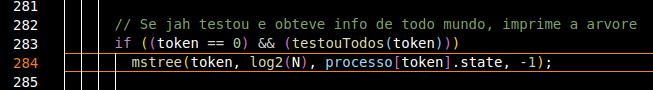
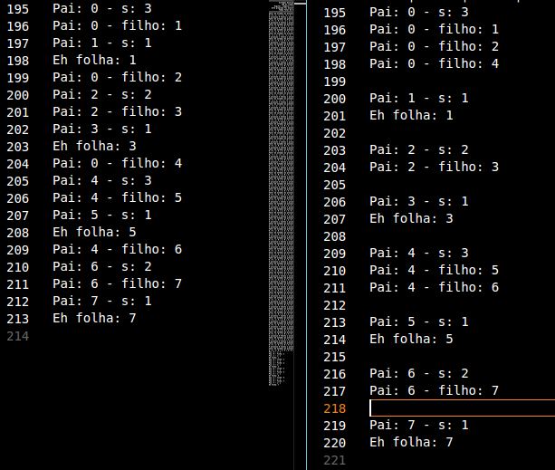

|
TRABALHO PRÁTICO Relatório: Para implementar o algoritmo do Trabalho Prático 2, usei como base o programa construido no Trabalho Prático 1 (TP1). Para que a árvore seja construida em cima do TP1, determei, de maneira estática no código, que isso ocorra quando o processo raiz da árvore desejada tiver conhecimento do estado de todos os outros processos.  Para construir a árvore de fato, crei uma função recursiva chamada mstree com os parâmetros:
Essa função vai se utilizar de outro ponto importante do TP1: a fila de testes. No TP1 criei a função defineFilaTestes para encontrar os processos que deveriam ser testados por um dado processo. Com isso, podemos utilizar essa função para descobrirmos os filhos da raiz. Dessa forma a função passa por todos os s de 1 até s-filho (ou a dimensão do vCube), imprimindo o primeiro processo correto e fazendo as chamadas subsequentes para os filhos contruirem o resto da árvore, ou seja, os filhos dos filhos. E caso o s-filho chegue em 1, aquele caminho da árvore está construído e a recursão pode retornar. Testes e Logs 1. Raiz 0 e dimensão 22. Raiz 0 e dimensão 3 3. Raiz 0, dimensão 3 e processos 1,2,4,7 falhos 4. Raiz 7, dimensão 3 e processo 0 falho 5. Raiz 0 e dimensão 4 Como a função é recursiva, a ordem dos logs pode ficar um tanto confusa. Para elucidar melhor vamos pegar como exemplo o log 2 e reordenar a impressão dos logs, juntando as linhas onde o "pai" é o mesmo.  Na esquerda temos o log na sua ordenação natural, e na direita o log reordenado para melhor vizualização. Assim, podemos ver o funcionamento do algoritmo, criando a árvore com raiz em 0, que tem como filhos 1, 2 e 4. Onde 1 é folha. 2 tem como filho o nó folha 3. 4 tem como filhos os nós 5, que é folha, e 6, que por sua vez tem o nó folha 7 como filho. Completando a árvore. Fontes do trabalho tempo.c cisj.c cisj.h smpl.c rand.c smpl.h makefile |